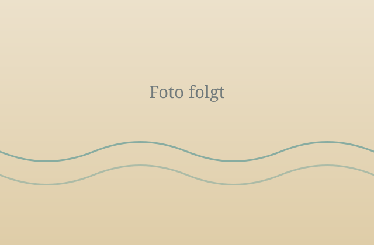

Vom Leuchtturm bis ins Watt
Auf den Leuchtturm, raus ins Watt, eine Runde Golf oder abends ins Kurtheater. Hier findest du, was auf der Insel geht.

Leuchtturm Norderney
54 Meter hoch, erbaut 1874 — einer der ältesten Leuchttürme der deutschen Nordseeküste. Die Aussichtsplattform in 52 m Höhe bietet einen Rundumblick über Insel, Watt und Meer.
Zuletzt aktualisiert: 16.11.2026 · Von uns zusammengestellt, ohne Gewähr. Du bist der Betrieb? Übernimm deinen Eintrag. · Fehler melden
Watt Welten — Nationalpark-Haus
Ausstellung und geführte Wattwanderungen mit zertifizierten Nationalpark-Guides, von kurzen Familientouren bis zur großen Wattwanderung zum Festland.
Zuletzt aktualisiert: 16.11.2026 · Von uns zusammengestellt, ohne Gewähr. Du bist der Betrieb? Übernimm deinen Eintrag. · Fehler melden
Golfclub Norderney e.V.
Der einzige typische Links-Golfplatz Deutschlands — 9 Löcher in offener Dünenlandschaft direkt am Meer.
Zuletzt aktualisiert: 16.11.2026 · Von uns zusammengestellt, ohne Gewähr. Du bist der Betrieb? Übernimm deinen Eintrag. · Fehler melden
Reitschule Junkmann
Reitbetrieb mit Strandritten zur Weißen Düne, Ausritten durch die Dünen, Reitunterricht und Ponyreiten für Kinder. Auf der Insel gibt es rund 50 km ausgewiesene Reitwege. Im September findet traditionell die Jagdreiterwoche mit Turnieren statt.
Zuletzt aktualisiert: 16.11.2026 · Von uns zusammengestellt, ohne Gewähr. Du bist der Betrieb? Übernimm deinen Eintrag. · Fehler melden
Surfschule Norderney
Kurse für Einsteiger und Fortgeschrittene direkt am Hafen — Surfen, Stand-up-Paddling und mehr.
Zuletzt aktualisiert: 16.11.2026 · Von uns zusammengestellt, ohne Gewähr. Du bist der Betrieb? Übernimm deinen Eintrag. · Fehler melden
Kurtheater Norderney
Eines der schönsten Theater Ostfrieslands, dem Opernhaus Hannover nachempfunden. Seit 1961 auch Kino im Haus, seit 1990 Spielstätte des Internationalen Filmfests Emden-Norderney.
Zuletzt aktualisiert: 16.11.2026 · Von uns zusammengestellt, ohne Gewähr. Du bist der Betrieb? Übernimm deinen Eintrag. · Fehler melden
Fischerhaus-Museum
April bis Oktober
Das Museum des Heimatvereins zeigt im Nachbau eines Norderneyer Fischerhauses aus dem 19. Jahrhundert, wie karg das Leben der ersten Inselbewohner war, und erzählt die Geschichte des ältesten deutschen Nordseebades. Nebenan gehört das Teehuus zum Verein. Geöffnet montags und freitags ab 11 Uhr, mittwochs ab 15 Uhr, jeweils mit öffentlicher Führung.
Zuletzt aktualisiert: 16.11.2026 · Von uns zusammengestellt, ohne Gewähr. Du bist der Betrieb? Übernimm deinen Eintrag. · Fehler melden
bade:haus norderney
Thalasso-Zentrum mit drei Bereichen: das Spassbad als Familienbereich mit Meerwasser-Wellenbecken und Rutsche, die Wasserebene mit warmen Meerwasserbecken und die Feuerebene mit mehreren Saunen. Das Spassbad öffnet täglich von 9:30 bis 17:30 Uhr, Spa und Sauna bis 20:30 Uhr.
Zuletzt aktualisiert: 16.11.2026 · Von uns zusammengestellt, ohne Gewähr. Du bist der Betrieb? Übernimm deinen Eintrag. · Fehler melden
Bömmelbahn
März bis Oktober
Rundfahrt in nostalgischen Bimmelbahnen vorbei an Leuchtturm, Dünenlandschaft, Yachthafen und Wasserturm. Die Fahrt dauert rund 1 Stunde 45 Minuten inklusive einer halbstündigen Pause. Abfahrten täglich um 11, 12, 13, 14 und 15 Uhr. Gut geeignet, um die Insel mit wenig Aufwand einmal ganz zu sehen.
Zuletzt aktualisiert: 16.11.2026 · Von uns zusammengestellt, ohne Gewähr. Du bist der Betrieb? Übernimm deinen Eintrag. · Fehler melden
Fahrt zu den Seehundbänken
April bis Oktober
Ausflugsfahrten mit den Fahrgastschiffen FRISIA X und FRISIA XI ins Wattenmeer zu den Seehundbänken. Vom selben Anbieter gibt es außerdem Tagesfahrten zu den Nachbarinseln Baltrum, Juist, Borkum und Spiekeroog. Die Fahrten hängen von den Gezeiten ab, deshalb lohnt ein Blick auf den aktuellen Fahrplan.
Zuletzt aktualisiert: 16.11.2026 · Von uns zusammengestellt, ohne Gewähr. Du bist der Betrieb? Übernimm deinen Eintrag. · Fehler melden
Charly's Minigolf
Zwei Minigolfanlagen mit je 18 Bahnen, eine davon direkt am Nordstrand mit Blick über das Meer, die zweite am Anfang der Deichstraße. Eine Reservierung ist nicht nötig, man kommt einfach vorbei. Erwachsene zahlen 6 Euro, Kinder bis 10 Jahre 5 Euro.
Zuletzt aktualisiert: 16.11.2026 · Von uns zusammengestellt, ohne Gewähr. Du bist der Betrieb? Übernimm deinen Eintrag. · Fehler melden
Tennisanlage TuS Norderney
Sommersaison
Die Tennisplätze des TuS Norderney liegen an der Mühle und können in der Sommersaison auch von Gästen gebucht werden, nicht nur von Vereinsmitgliedern. Die Buchung läuft über ein Online-System des Vereins. Eine Tennishalle gibt es auf der Insel nicht, gespielt wird also im Freien.
Zuletzt aktualisiert: 16.11.2026 · Von uns zusammengestellt, ohne Gewähr. Du bist der Betrieb? Übernimm deinen Eintrag. · Fehler melden
Norderney aktiv
Angebot von Julia Ristow mit Yogakursen drinnen und draußen, dazu Lauf- und Ausdauertraining, Smovey-Walks, Personal Training und Ernährungscoaching. Trainiert wird unter anderem am Weststrand und in der Yogapraxis in der Bismarckstraße. Viele Kurse lassen sich spontan ohne feste Anmeldung buchen.
Zuletzt aktualisiert: 16.11.2026 · Von uns zusammengestellt, ohne Gewähr. Du bist der Betrieb? Übernimm deinen Eintrag. · Fehler melden
Kegel- und Bowlingbahn Anzel Janko
Kegel- und Bowlingbahn direkt beim Kurtheater und damit eine der wenigen Möglichkeiten, einen Regentag drinnen zu verbringen. Für Gruppen empfiehlt sich eine telefonische Voranmeldung.
Zuletzt aktualisiert: 16.11.2026 · Von uns zusammengestellt, ohne Gewähr. Du bist der Betrieb? Übernimm deinen Eintrag. · Fehler melden
Kutschfahrten Norderney
Pferdekutschfahrten von Ulf Holler und Carola de Vries in mehreren Varianten: Strandfahrten für bis zu 4 Personen, Inselrundfahrten für bis zu 12 Personen sowie Hochzeitsfahrten. Eine entspannte Alternative zum Radweg, besonders mit Kindern oder wenig Zeit.
Zuletzt aktualisiert: 16.11.2026 · Von uns zusammengestellt, ohne Gewähr. Du bist der Betrieb? Übernimm deinen Eintrag. · Fehler melden
Zu dieser Auswahl gibt es noch keinen Eintrag. Probier einen anderen Filter.
Südstrandpolder
Flachwasserzonen als wichtiges Brut- und Rastgebiet für zahlreiche Seevögel — ein ruhiger Ort für Fernglas und Kamera.
Du hast selbst einen Betrieb auf Norderney? Trag ihn kostenlos ein.
Sicherheitshinweis
Wattwandern nur mit Guide
Das Watt wirkt harmlos, ist aber gezeitenabhängig und kann bei auflaufendem Wasser gefährlich werden. Wandere daher ausschließlich mit zertifizierten Guides des Nationalpark-Hauses oder anderer geprüfter Anbieter — nie auf eigene Faust ins offene Watt.
Mehr zum WattenmeerÖffnungszeiten, Ticketpreise und Tourenzeiten hängen von Saison und Gezeiten ab und ändern sich häufig. Aktuelle Termine gibt es direkt bei den Anbietern oder im vollständigen Veranstaltungskalender.
Der Guide ist kostenlos und unabhängig
Keine Werbung, keine Buchungsgebühren. Wenn er dir im Urlaub geholfen hat, freue ich mich über eine kleine Unterstützung.